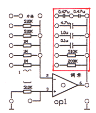

1、电阻的测量 使用数字万用表测量电阻阻值时，应当注意以下几个方面：首先应使用与希望值相接近的电阻量程，其次测量电阻时，要将模拟机的电源关上，带电测量电阻量出的阻值是不准确的。第三点是在测量电阻时一定要尽量保证对电阻进行单独测量，将电阻两端的导线拔去后，直接测量电阻的两端，以免受到其它电子元件的影响。 2、 常见问题的排除方法： 问题一（使用不当）：由于运算放大器通常需要搭成负反馈，以保证其工作稳定，因此在选择电阻和电容时，一定要注意不能够单独使用运算放大器输出端的电阻和电容（下图所示方框内的部分）。  问题二（导线损坏）：检查导线是否损坏的方法是使用万用表测量每根导线，察看每一根导线是否连通。问题三（运放损坏）：判断运算放大器是否正常，较简单的方法是在运算放大器上搭接反相器，分别测量其输入和输出的电压，因为反相器的传递函数为-1，其输出和输入的电压应正好相反（运放已经调零）。测试电路的连接方法如下：
图A为电子模拟机左侧电源部分的连接方法，将+15V与阶跃信号的输入连接，阶跃信号的输出与反相器的输入连接，反相器的连接方法如图B（反相器为反馈电阻和输入电阻的阻值相同）。 |
||